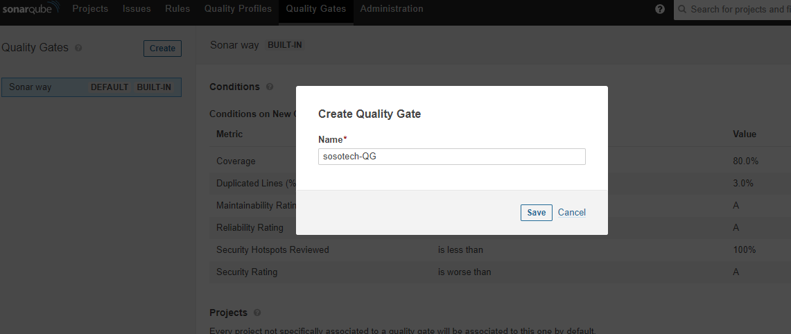
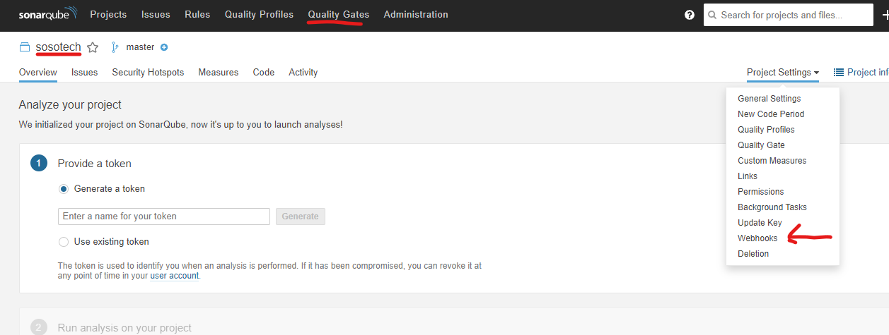
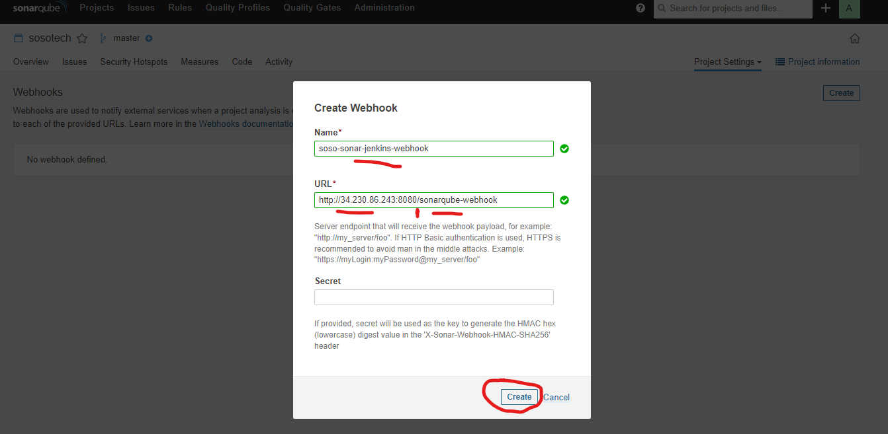

Wheck Style analysis Quality Check, Gate
https://docs.sonarqube.org/latest/analyzing-source-code/scanners/jenkins-extension-sonarqube/ https://docs.sonarqube.org/latest/analyzing-source-code/scanners/sonarscanner/
Create project
- Create a new project called: sosotech
- Generate a token called: sosotech-token 847ff2f312def534eb71b3a81750227f96673c24
Quality gate
Create a New Quality gate

Add conditions

Next: Add the quality gate to the sonarqube project Go To: Projects --> Quality Gate --> Projects Setting --> webhooks

Create a webhook called: soso-sonar-jenkins-webhook. you can name watever you choose - The webhook url is my jenkins url and the name - sonarqube-webhook like so http://34.230.86.243:8080/sonarqube-webhook
